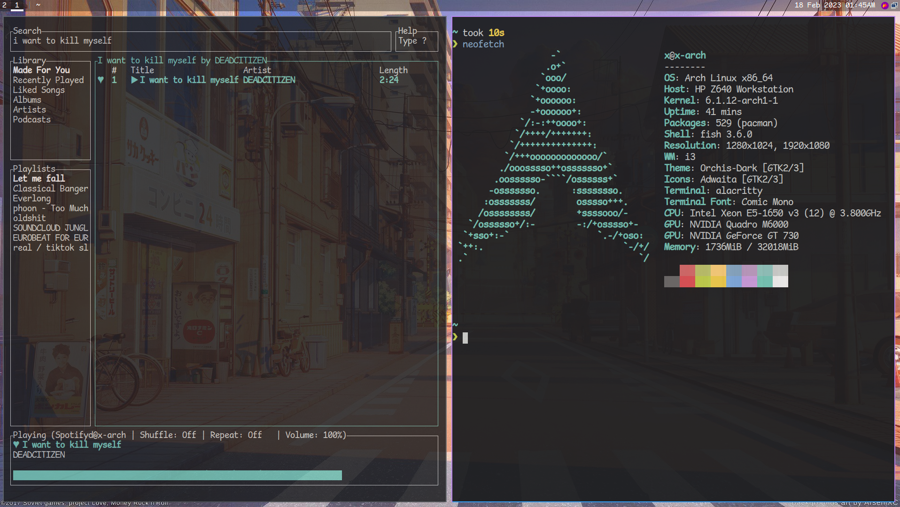

pc
• cpu - Intel Xeon e5 1650 v3
• motherboard - HP Z640
• ssd - OEM - 240GB
• ssd2 - Patriot Burst Elite - 960GB
• ram - OEM 2x16GB 2666Mhz ECC DDR4
• gpu - Nvidia Quadro M6000 12GB
• gpu 2 - Nvidia Geforce GT 730 2GB
hardware
• phone - Google Pixel 2 w/ lineage
• laptop - m1 macbook air w/ asahi
peripherals
• headphones - Koss Porta Pro w/ Yaxi Pads
• iems - Moondrop Chu
• Amp/Dac - Moondrop Click
• mouse - Logitech G Pro Superlight (white)
• mic - Behringer XM8500
Software
arch linux
librewolf
alacritty
vscodium
i3-gaps
 < BACK TO THE MAIN PAGE >